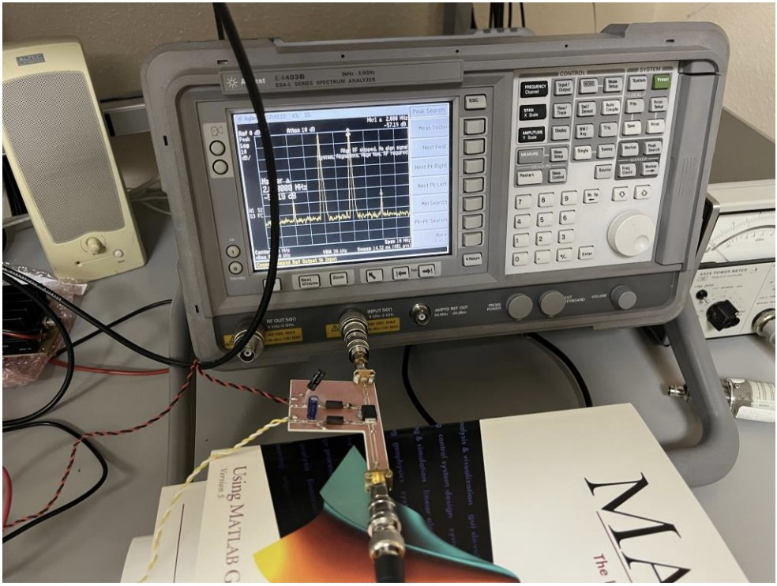
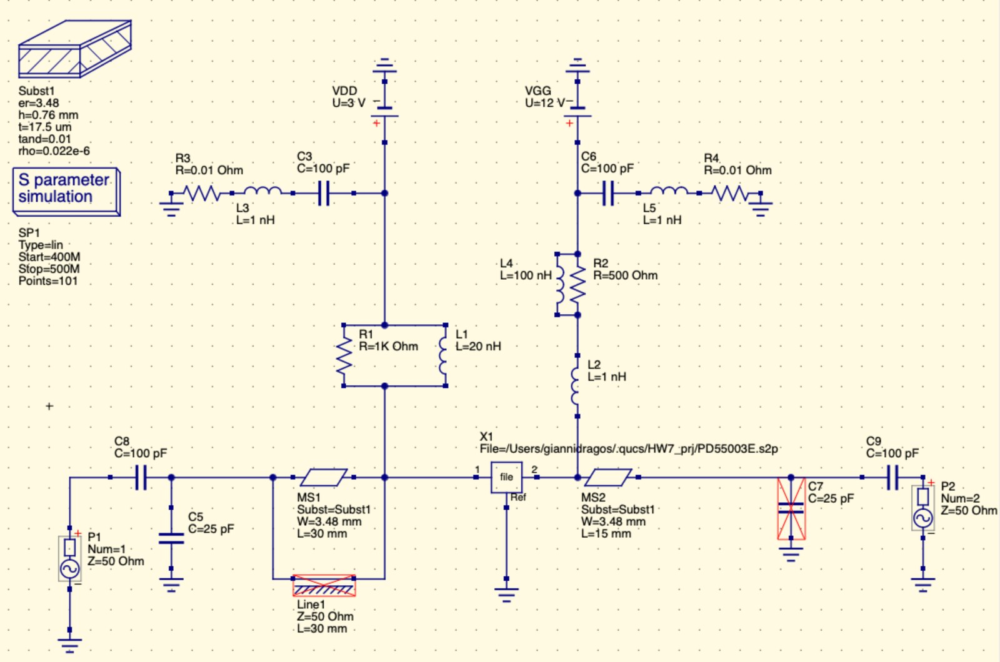
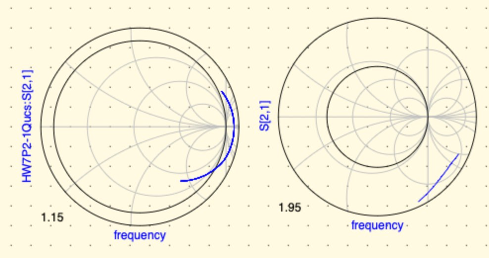
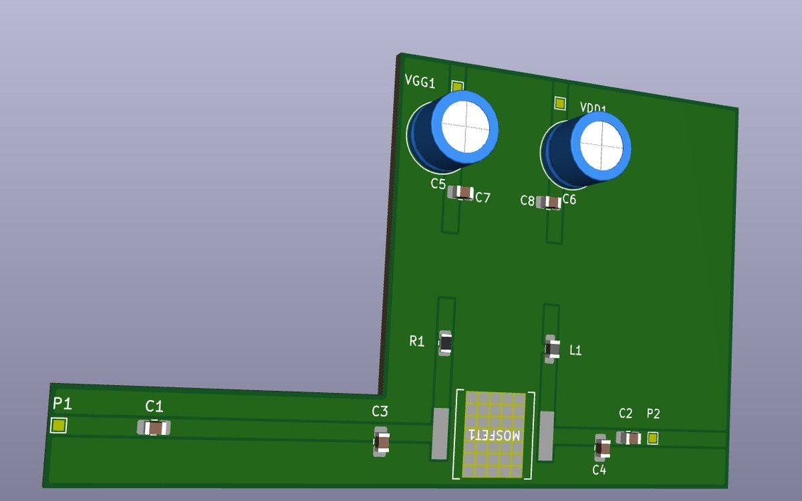
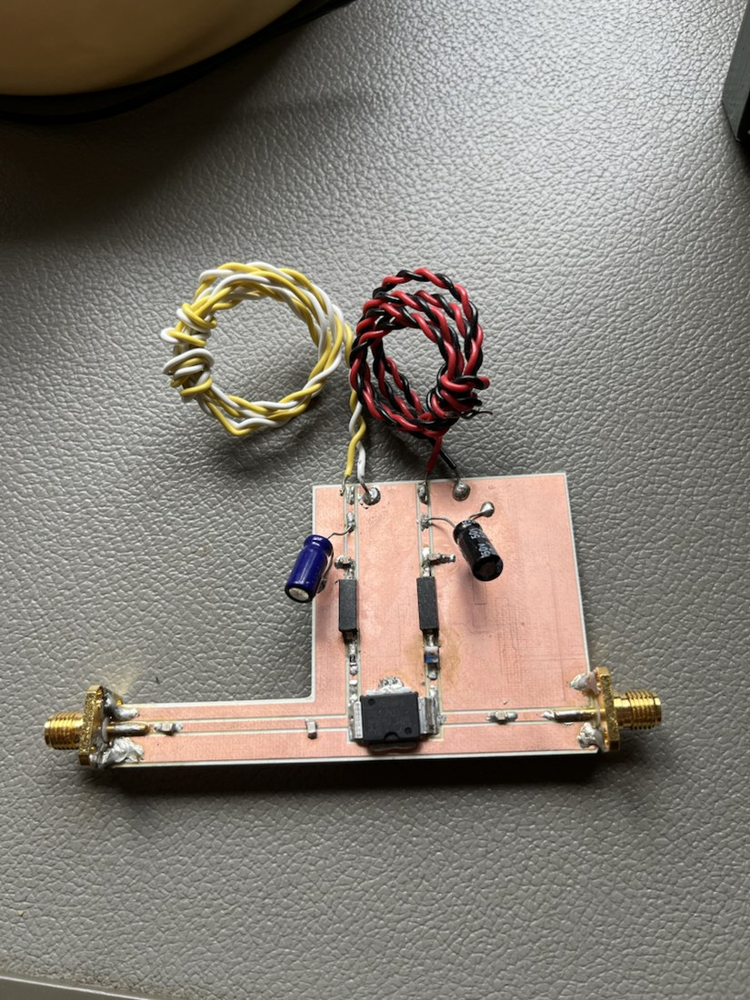

RF + Electromagnetics
UHF RF Power Amplifier
Design, simulation, fabrication, and bench testing of a 400-500 MHz UHF RF power amplifier using a PD55003 LDMOS transistor.

My work
From simulated amplifier behavior to measured hardware.
- NeedMeet a UHF gain target while keeping the amplifier matched to 50 ohm RF equipment.
- DesignBuild the PD55003 common-source stage, microstrip lines, and matching network in simulation.
- MeasureUse the physical board, VNA, spectrum analyzer, and two-tone test to check gain, match, and linearity.
- CompareUse the lab report, plots, and prototype photos to connect simulated behavior to measured hardware.
I designed a single-stage common-source RF amplifier around the PD55003 LDMOS device. The input and output were built around 50 ohm microstrip lines on Rogers 4003C, with the trace width calculated near 1.8 mm and matching/bypass components placed to model real layout effects.
The design used a gate-side shunt capacitor for input matching and output bypass/stabilization capacitors. In simulation, the amplifier met the 10 dB gain target through the lower portion of the band before rolling off near 500 MHz. Measurement showed the same trend, with about 10 dB gain near 400-450 MHz and reduced gain at the high end of the band.
I measured the physical board with a VNA and DC supply, evaluated input return loss, compared measured and simulated S-parameters, and performed a two-tone test at 449 MHz and 451 MHz. The measured OIP3 was approximately 30 dBm, below the theoretical value because the amplifier was operated at reduced drain bias during the lab.
Open lab reportPhotos
Design evidence.



